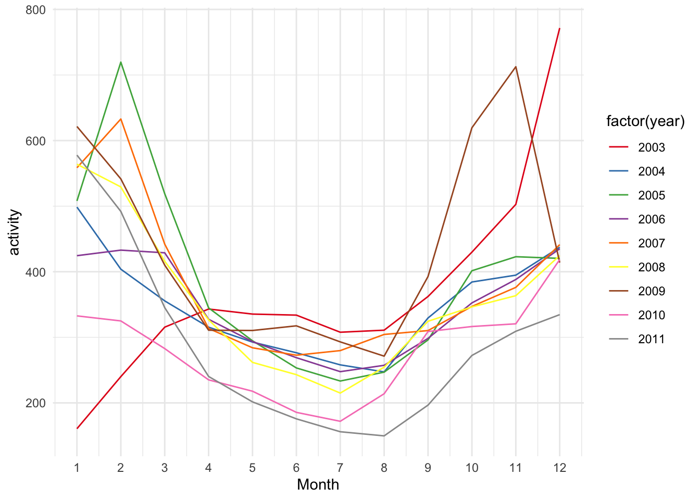

7 Databases
Om wat verschillende functies van de database te laten zien worden er verschillende datasets ingeladen. Hieronder wordt de data van de dengue en flu google trends tidy gemaakt, door de landnamen in één kolom te zetten. Ook wordt er een aparte kolom gemaakt met de naam van de ziekte. Voorderest worden ook de datum opgesplitst in dagen, maanden en jaren zodat deze later samengevoegd kunnen worden met de gapminder data.
library(dslabs)
library(tidyverse)
#laden van gapminder
gapminder_df <- gapminder %>% as.data.frame()
#tidy maken van data functie
tidy_func <- function(path,name){
read_df <- read.csv(path, skip=11) %>% as.data.frame
col_nam <- colnames(read_df)
read_df %>% pivot_longer(cols=col_nam[-1], names_to="country", values_to=paste0("activity")) %>%
separate(Date, into = c("year", "month","day"),convert = TRUE) %>% mutate("disease"=name)
}
dengue_tidy <- tidy_func("data/dengue_data.csv","dengue")
flu_tidy <- tidy_func("data/flu_data.csv","flu")
flu_tidy %>% filter(year==2005)
#opslaan als RDS
saveRDS(dengue_tidy, file = "data/dengue_tidy.rds")
saveRDS(flu_tidy, file = "data/flu_tidy.rds")
saveRDS(gapminder_df, file = "data/gapminder.rds")
#opslaan als CSV
write.csv(gapminder_df,"data/gapminder.csv")
write.csv(dengue_tidy,"data/dengue_tidy.csv")
write.csv(flu_tidy,"data/flu_tidy.csv")Er moet een database gemaakt worden om de tabellen op te slaan. Hieronder staat SQL code die ingevoerd kan worden bij het programma dBeaver (of een andere database software) voor het creëren van een database.
Om de database te gebruiken in R wordt er een connectie aangemaakt. Met de connectie kan R code gebruikt worden voor interactie met de database. Dit is handig omdat er dan niet steeds tussen twee programma’s hoeft te switchen. Via de connectie worden de verschillende tabellen ingeladen in de database.
library(DBI)
#Connectie opzetten
con <- dbConnect(RPostgres::Postgres(),
dbname = "workflows",
host="localhost",
port="5432",
user="postgres",
password="Datascience")
#Aanmaken van tabellen in databse
dbWriteTable(con, "flu", flu_tidy)
dbWriteTable(con, "dengue", dengue_tidy)
dbWriteTable(con, "gapminder", gapminder_df) B bBññn ñOm de gapminder wat netter te maken heb ik ervoor gekozen om alvast de landen en jaren die niet in de flu en dengue google trend data voorkomt te verwijderen.
#Jaren verwijderen die niet aanwezig zijn in flu en dengue
gapminder_minyear <- gapminder_df[gapminder_df$year >= min(flu_tidy$year), ]
gapminder_maxyear <- gapminder_minyear[gapminder_minyear$year <= max(flu_tidy$year), ]
#Landen weghalen die niet en flu en dengue aanwezig zijn
landen <- c(dengue_tidy$country, flu_tidy$country,recursive=TRUE)
gapminder_clean <- subset(gapminder_maxyear, country %in% landen)De oude tabel gapminder wordt via de connectie verwijderd en de nette wordt ingevoerd
#Oude tabel verwijderen en nieuwe tabel invoegen
dbRemoveTable(con, "gapminder")
dbWriteTable(con, "gapminder", gapminder_clean)create table all_data
as
select
gapminder.*,
flu_dengue."month",
flu_dengue."day",
flu_dengue.disease,
flu_dengue.activity
from gapminder
left join flu_dengue
on flu_dengue."year" = gapminder."year" and flu_dengue.country = gapminder.country
ORDER BY gapminder."year", gapminder.country, flu_dengue."month", flu_dengue."day" ;#Data uit DB ophalen
all_data <- dbReadTable(con, "all_data")
#Dataset opslaan in data
saveRDS(all_data, file="data/all_data.rds")
#Connectie met database sluiten
dbDisconnect(con) library(gridExtra)
populatie_func <- function(dataset,year,name){
country_data <- dataset %>% filter(year==2008, disease==name) %>%
group_by(country) %>%
summarise(mean(activity, na.rm=TRUE), max(population),max(gdp))
colnames(country_data) <- c("country","activity","population","GDP")
country_data[order(country_data$population, decreasing=TRUE),]
plot1 <- country_data %>% ggplot(aes(x=country, y=population))+
geom_col()+
theme_minimal()+
theme(axis.text.x = element_text(angle = 90,vjust=0.3,hjust=1))
plot2 <- country_data %>% ggplot(aes(x=country, y=GDP))+
geom_col()+
theme_minimal()+
theme(axis.text.x = element_text(angle = 90,vjust=0.3,hjust=1))
plot3 <- country_data %>% ggplot(aes(x=country, y=activity))+
geom_col()+
theme_minimal()+
theme(axis.text.x = element_text(angle = 90,vjust=0.3,hjust=1))
grid.arrange(plot1,plot2,plot3)
}
populatie_func(all_data, 2008, "flu")

library(RColorBrewer)
#Summarise van data per year
flu_dengue <- all_data %>% group_by(month, year, disease) %>%
na.omit() %>% filter(year!=2002) %>%
summarise(mean(activity))
colnames(flu_dengue) <- c("month","year","disease", "activity")
#Functie voor plot van verloop activity
activity_years_func <- function(dataset,name){
dataset %>% filter(disease==name) %>%
ggplot(aes(x=month,y=activity, group=year, color=factor(year)))+
geom_line()+
scale_x_continuous(name="Month", breaks=(1:12), limits=c(1, 12))+
scale_color_brewer(palette = "Set1")+
theme_minimal()
}